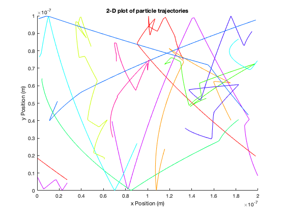
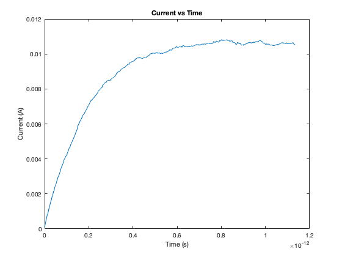
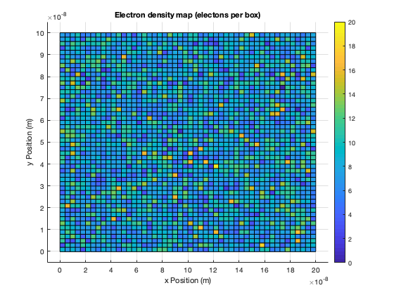
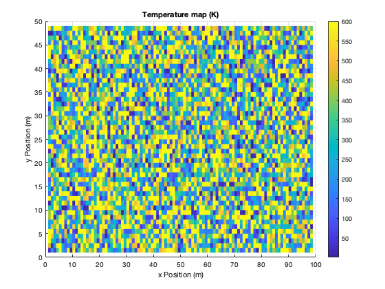

clear all
clc
close all
Ass2_pa
maxt=1200;
global thermalVelo
global tstep
global setting
setting=2;
totaltemp=0;
watchplot=false;
pausetime=0.001;
currentposplot=false;
mass=0.26*9.1093*10^(-31);
kbolts=1.380*10^(-23);
T=300;
thermalVelo=(kbolts*T/mass)^(0.5);
fprintf('The electric field strength is %4.3s V/m \n',Ex(1,1)*(200/201))
fprintf('The force on a electron is %4.3s N \n',1.602e-19*Ex(1,1)*(200/201))
fprintf('The acceleration of an electron is %4.3s m/s^2 \n',1.602e-19*Ex(1,1)*(200/201)/mass)
tstep=1e-9/thermalVelo/8;
Nt=0;
if(setting==2)
boxes(1,1)=0e-9;
boxes(1,2)=0e-9;
boxes(1,3)=0e-9;
boxes(1,4)=0e-9;
boxes2(1,1)=0e-9;
boxes2(1,2)=0e-9;
boxes2(1,3)=0e-9;
boxes2(1,4)=0e-9;
numelec=20000;
watchplot=true;
figure(1)
xlabel('x Position (m)')
ylabel('y Position (m)')
title('2-D plot of particle trajectories')
hold on
end
if(setting==4|setting==1|setting==3|setting==5)
boxes(2,1)=0e-9;
boxes(2,2)=0e-9;
boxes(2,3)=0e-9;
boxes(2,4)=0e-9;
boxes2(1,1)=0e-9;
boxes2(1,2)=0e-9;
boxes2(1,3)=0e-9;
boxes2(1,4)=0e-9;
numelec=20000;
if (setting==4)
currentposplot=true;
end
hold on
numelec=20000;
end
xwatch=1:10;
plotnum=length(xwatch);
color_map=hsv(plotnum);
if(watchplot)
for h=1:length(boxes(:,2))
plot([boxes(h,1)-boxes(h,4)/2 boxes(h,1)-boxes(h,4)/2 boxes(h,1)+boxes(h,4)/2 boxes(h,1)+boxes(h,4)/2 boxes(h,1)-boxes(h,4)/2 ],[boxes(h,2)+boxes(h,3)/2 boxes(h,2)-boxes(h,3)/2 boxes(h,2)-boxes(h,3)/2 boxes(h,2)+boxes(h,3)/2 boxes(h,2)+boxes(h,3)/2],'k')
end
for h=1:length(boxes2(:,2))
plot([boxes2(h,1)-boxes2(h,4)/2 boxes2(h,1)-boxes2(h,4)/2 boxes2(h,1)+boxes2(h,4)/2 boxes2(h,1)+boxes2(h,4)/2 boxes2(h,1)-boxes2(h,4)/2 ],[boxes2(h,2)+boxes2(h,3)/2 boxes2(h,2)-boxes2(h,3)/2 boxes2(h,2)-boxes2(h,3)/2 boxes2(h,2)+boxes2(h,3)/2 boxes2(h,2)+boxes2(h,3)/2],'k')
end
end
watchstep=8;
C_th=1e19;
C_sim=numelec/(100e-9*200e-9);
dot_c=C_th/C_sim*1.60217e-19;
for i=1:numelec
electrons(i,:)=createElectron(boxes,boxes2,thermalVelo);
end
for k=1:length(xwatch)
paths(1,k*2-1)=electrons(xwatch(k),1);
paths(1,k*2)= electrons(xwatch(k),2);
end
for t=1:maxt
electrons=moveElectrons(electrons,boxes,boxes2,Ex,Ey,mass);
current(t)=mean(electrons(:,3)).*C_th.*1.60217e-19.*100e-9 ;
if(currentposplot)
figure(1)
plot(electrons(:,1),electrons(:,2),'o')
xlim([-10e-9 210e-9])
ylim([-10e-9 110e-9])
hold on
for h=1:length(boxes(:,2))
plot([boxes(h,1)-boxes(h,4)/2 boxes(h,1)-boxes(h,4)/2 boxes(h,1)+boxes(h,4)/2 boxes(h,1)+boxes(h,4)/2 boxes(h,1)-boxes(h,4)/2 ],[boxes(h,2)+boxes(h,3)/2 boxes(h,2)-boxes(h,3)/2 boxes(h,2)-boxes(h,3)/2 boxes(h,2)+boxes(h,3)/2 boxes(h,2)+boxes(h,3)/2])
end
for h=1:length(boxes2(:,2))
plot([boxes2(h,1)-boxes2(h,4)/2 boxes2(h,1)-boxes2(h,4)/2 boxes2(h,1)+boxes2(h,4)/2 boxes2(h,1)+boxes2(h,4)/2 boxes2(h,1)-boxes2(h,4)/2 ],[boxes2(h,2)+boxes2(h,3)/2 boxes2(h,2)-boxes2(h,3)/2 boxes2(h,2)-boxes2(h,3)/2 boxes2(h,2)+boxes2(h,3)/2 boxes2(h,2)+boxes2(h,3)/2],'k')
end
hold off
end
if(watchplot)
if (mod(t,watchstep)==0)
for k=1:length(xwatch)
paths(2,k*2-1)=paths(1,k*2-1);
paths(2,k*2)= paths(1,k*2);
paths(1,k*2-1)=electrons(xwatch(k),1);
paths(1,k*2)=electrons(xwatch(k),2);
end
for k=1:length(xwatch)
if (abs(paths(1,k*2-1) -paths(2,k*2-1) )<20e-9)
plot(paths(:,k*2-1),paths(:,k*2),'-','Color',color_map(k,:))
xlim([0e-9 200e-9])
ylim([0e-9 100e-9])
end
end
pause(0.01)
end
end
end
figure(2)
plot(linspace(0,tstep*maxt,length(current)),current)
xlabel('Time (s)')
ylabel('Current (A)')
title('Current vs Time')
if(setting==2|setting==5)
X(:,1)=electrons(:,1);
X(:,2)=electrons(:,2);
figure(3)
hist3(X,'Nbins',[50 50],'CDataMode','auto');
title('Electron density map (electons per box)')
xlabel('x Position (m)')
ylabel('y Position (m)')
caxis([0 20])
colorbar
view(0,90)
end
if(setting==2|setting==5)
Temp_density(electrons);
end
The electric field strength is 5.000e+05 V/m
The force on a electron is 8.010e-14 N
The acceleration of an electron is 3.382e+17 m/s^2
   